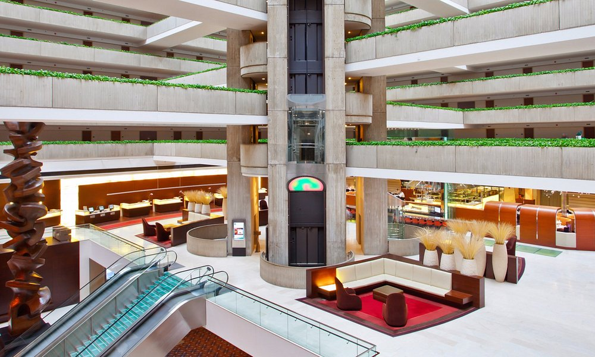
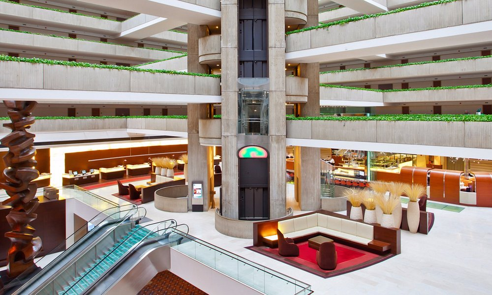

Work History
Hub of Hospitality
Since 2015, I have been masternig my hospitality skills. Communication and teamwork are my bread and butter. Working with people can be a challenge especially in fast paced environments of ever changing needs and requests.
Hyatt Regency O'Hare
March 2015 - June 2020
It all began in 2015 in Chicago working at a large airport and convention center hotel that has 1,095 rooms. A 4 star hotel that often housed business travelers, stranded passengeres from cancelled flights in one of America's largest airports and large scale conventions.
During my time at the Hyatt Regency O'Hare, I started as a front desk host and quickly moved up the ranks to management. When COVID hit in 2020, I finished my career there as an Assistant Front Office Manager. I was the contact point for multiple clients that were contracted with us. Oversaw 30 staff members from 4 different operational departments and ensured brand and quality standards were held accross the board. I assisted in training new employees, delegating tasks, and shared feedback. Even back then, before I had any coding knowledge, I worked though OPERA to create reports that helped us boost our customer service rankings by tracking guest satisfaction surveys. After implimenting the knowledge from my reports, guest satisfaction increased from 72% to 84%.
 

Every weekend we would welcome thousands of new guests and almost every weeknight, we welcomed the hundreds of people that sometimes all showed at once from cancelations at the airport. I treat every person as an individual with their own needs and requests and work with my team and multiple departments to ensure a hassle free stay.

Andaz Amsterdam
July 2021 - Current
The Andaz Amsterdam is a 5 star boutque hotel with only 122 rooms which allows for a more intimate environment. Here, I focus on the relationships we have with guests and am a contact point not for a group, but for an individual. I am in communication with a guest from before they arrive until their day of departure, helping plan a the perfect stay in Amsterdam whatever that may mean to them.
In addition to working with guests and as concierge, I am the head of our enrollment program. My responsibility in this area is to track the amount of people who sign up to become members of our hotel and create strategies to motivate the front desk to enroll them. I compare the data given by our headquarters to the opportunities at hand and ensure we reach our goals. Last year our goal was 23% enrollment rate and under my partial leadership we ended at 32%.